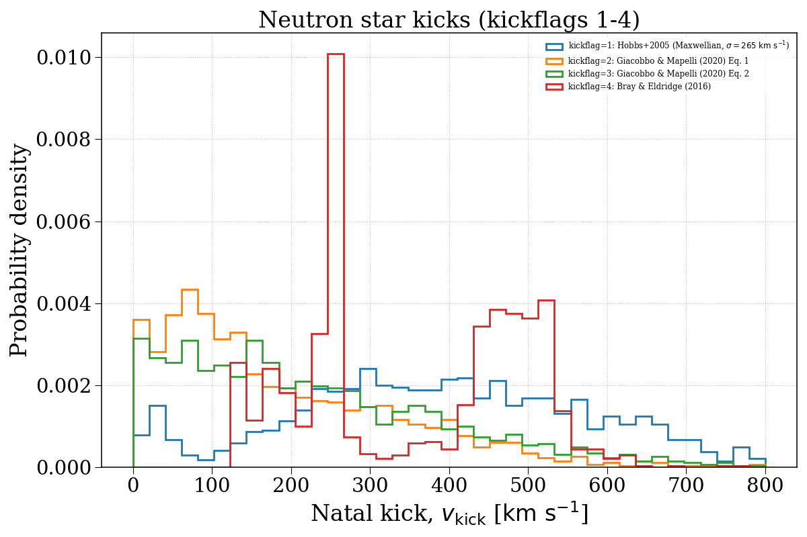
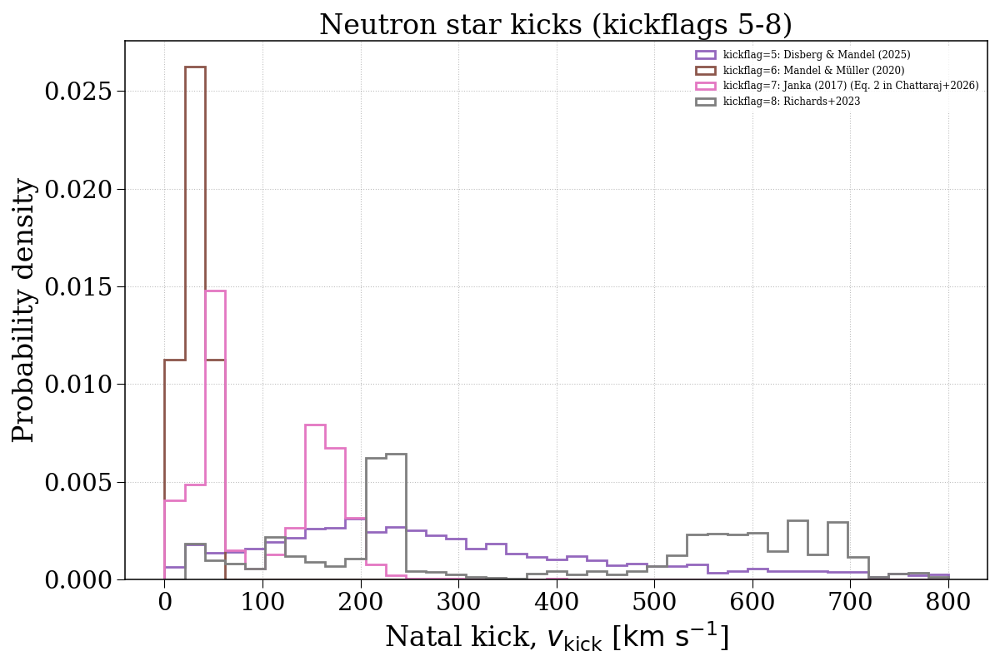
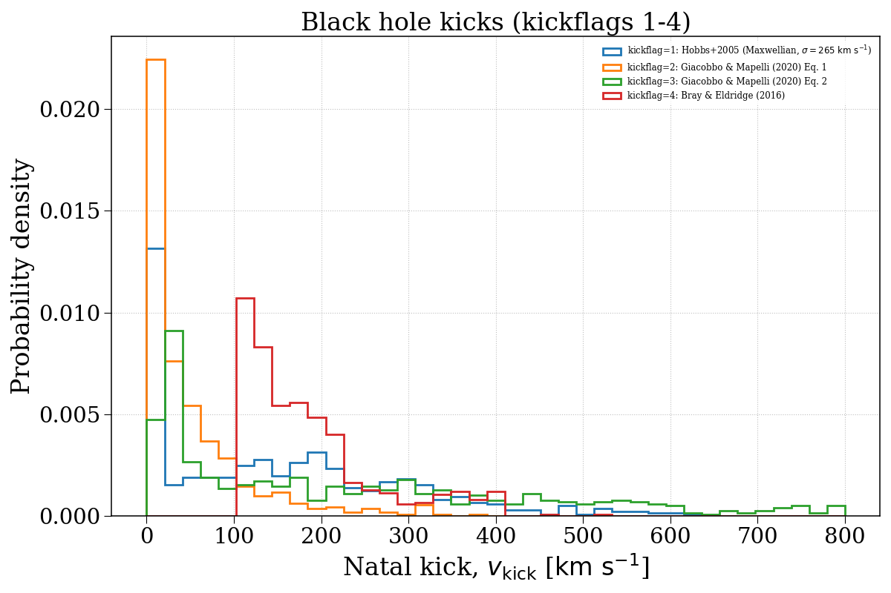
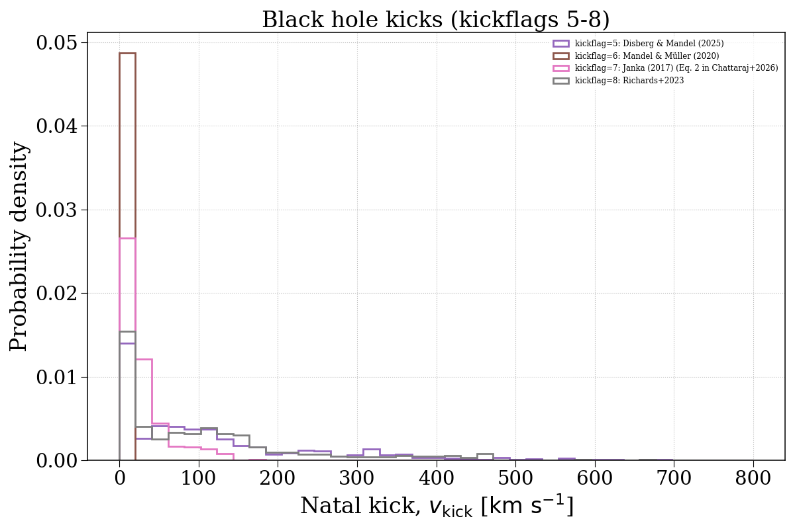

Note
Go to the end to download the full example code.
kickflag¶
This example demonstrates how changing the kickflag parameter can affect the natal kick velocity distributions of compact objects. We separate this into neutron stars and black holes.




Evolving population with kickflag = 1...
Evolving: 0%| | 0/2010 [00:00<?, ?sys/s]
Evolving: 2%|▏ | 31/2010 [00:00<00:06, 298.40sys/s]
Evolving: 3%|▎ | 61/2010 [00:00<00:13, 143.63sys/s]
Evolving: 4%|▍ | 80/2010 [00:00<00:12, 150.26sys/s]
Evolving: 5%|▍ | 98/2010 [00:00<00:13, 142.13sys/s]
Evolving: 6%|▌ | 114/2010 [00:00<00:14, 128.15sys/s]
Evolving: 6%|▋ | 128/2010 [00:00<00:16, 111.41sys/s]
Evolving: 8%|▊ | 153/2010 [00:01<00:13, 138.46sys/s]
Evolving: 9%|▊ | 171/2010 [00:01<00:12, 147.23sys/s]
Evolving: 9%|▉ | 187/2010 [00:01<00:12, 149.99sys/s]
Evolving: 10%|█ | 203/2010 [00:01<00:12, 141.86sys/s]
Evolving: 11%|█ | 218/2010 [00:01<00:15, 118.48sys/s]
Evolving: 12%|█▏ | 241/2010 [00:01<00:13, 134.10sys/s]
Evolving: 13%|█▎ | 256/2010 [00:01<00:16, 107.91sys/s]
Evolving: 14%|█▎ | 276/2010 [00:02<00:16, 103.17sys/s]
Evolving: 15%|█▌ | 308/2010 [00:02<00:11, 144.10sys/s]
Evolving: 16%|█▌ | 325/2010 [00:02<00:12, 139.82sys/s]
Evolving: 17%|█▋ | 341/2010 [00:02<00:11, 142.11sys/s]
Evolving: 18%|█▊ | 357/2010 [00:02<00:11, 142.30sys/s]
Evolving: 19%|█▊ | 376/2010 [00:02<00:10, 151.94sys/s]
Evolving: 20%|█▉ | 392/2010 [00:02<00:11, 136.00sys/s]
Evolving: 20%|██ | 412/2010 [00:02<00:10, 148.79sys/s]
Evolving: 21%|██▏ | 428/2010 [00:03<00:15, 104.11sys/s]
Evolving: 23%|██▎ | 463/2010 [00:03<00:10, 153.43sys/s]
Evolving: 24%|██▍ | 483/2010 [00:03<00:09, 154.21sys/s]
Evolving: 25%|██▍ | 502/2010 [00:03<00:10, 147.02sys/s]
Evolving: 26%|██▌ | 521/2010 [00:03<00:09, 151.34sys/s]
Evolving: 27%|██▋ | 538/2010 [00:03<00:09, 152.17sys/s]
Evolving: 28%|██▊ | 555/2010 [00:04<00:12, 116.32sys/s]
Evolving: 29%|██▉ | 582/2010 [00:04<00:09, 147.42sys/s]
Evolving: 30%|██▉ | 600/2010 [00:04<00:09, 144.59sys/s]
Evolving: 31%|███ | 617/2010 [00:04<00:12, 110.62sys/s]
Evolving: 32%|███▏ | 647/2010 [00:04<00:09, 147.44sys/s]
Evolving: 33%|███▎ | 666/2010 [00:04<00:08, 152.66sys/s]
Evolving: 34%|███▍ | 684/2010 [00:04<00:08, 149.57sys/s]
Evolving: 35%|███▍ | 701/2010 [00:05<00:09, 142.97sys/s]
Evolving: 36%|███▌ | 717/2010 [00:05<00:09, 137.96sys/s]
Evolving: 36%|███▋ | 733/2010 [00:05<00:08, 143.15sys/s]
Evolving: 37%|███▋ | 751/2010 [00:05<00:08, 141.92sys/s]
Evolving: 38%|███▊ | 772/2010 [00:05<00:07, 156.61sys/s]
Evolving: 39%|███▉ | 789/2010 [00:05<00:09, 130.25sys/s]
Evolving: 40%|████ | 805/2010 [00:05<00:08, 136.52sys/s]
Evolving: 41%|████ | 820/2010 [00:05<00:08, 132.36sys/s]
Evolving: 42%|████▏ | 837/2010 [00:06<00:08, 141.51sys/s]
Evolving: 42%|████▏ | 852/2010 [00:06<00:09, 123.97sys/s]
Evolving: 43%|████▎ | 866/2010 [00:06<00:09, 114.51sys/s]
Evolving: 44%|████▎ | 879/2010 [00:06<00:10, 113.05sys/s]
Evolving: 45%|████▍ | 898/2010 [00:06<00:08, 130.71sys/s]
Evolving: 45%|████▌ | 912/2010 [00:06<00:11, 96.11sys/s]
Evolving: 46%|████▌ | 926/2010 [00:07<00:11, 90.49sys/s]
Evolving: 48%|████▊ | 960/2010 [00:07<00:07, 136.77sys/s]
Evolving: 49%|████▊ | 976/2010 [00:07<00:09, 103.96sys/s]
Evolving: 49%|████▉ | 989/2010 [00:07<00:09, 108.23sys/s]
Evolving: 51%|█████ | 1018/2010 [00:07<00:07, 138.03sys/s]
Evolving: 52%|█████▏ | 1037/2010 [00:07<00:06, 148.22sys/s]
Evolving: 52%|█████▏ | 1054/2010 [00:07<00:06, 143.50sys/s]
Evolving: 53%|█████▎ | 1072/2010 [00:07<00:06, 147.68sys/s]
Evolving: 54%|█████▍ | 1088/2010 [00:08<00:08, 113.50sys/s]
Evolving: 55%|█████▌ | 1109/2010 [00:08<00:07, 119.75sys/s]
Evolving: 56%|█████▌ | 1130/2010 [00:08<00:06, 131.17sys/s]
Evolving: 57%|█████▋ | 1150/2010 [00:08<00:05, 144.29sys/s]
Evolving: 58%|█████▊ | 1166/2010 [00:08<00:07, 114.03sys/s]
Evolving: 59%|█████▉ | 1193/2010 [00:08<00:05, 144.27sys/s]
Evolving: 60%|██████ | 1210/2010 [00:09<00:05, 140.61sys/s]
Evolving: 61%|██████ | 1229/2010 [00:09<00:05, 150.02sys/s]
Evolving: 62%|██████▏ | 1246/2010 [00:09<00:05, 149.06sys/s]
Evolving: 63%|██████▎ | 1262/2010 [00:09<00:05, 136.61sys/s]
Evolving: 64%|██████▍ | 1283/2010 [00:09<00:04, 153.32sys/s]
Evolving: 65%|██████▍ | 1300/2010 [00:09<00:04, 154.24sys/s]
Evolving: 66%|██████▌ | 1317/2010 [00:09<00:04, 141.46sys/s]
Evolving: 66%|██████▋ | 1336/2010 [00:09<00:04, 153.04sys/s]
Evolving: 67%|██████▋ | 1352/2010 [00:10<00:05, 116.87sys/s]
Evolving: 69%|██████▊ | 1377/2010 [00:10<00:04, 145.12sys/s]
Evolving: 69%|██████▉ | 1394/2010 [00:10<00:04, 140.02sys/s]
Evolving: 70%|███████ | 1410/2010 [00:10<00:04, 142.76sys/s]
Evolving: 71%|███████ | 1426/2010 [00:10<00:04, 143.34sys/s]
Evolving: 72%|███████▏ | 1443/2010 [00:10<00:03, 150.06sys/s]
Evolving: 73%|███████▎ | 1459/2010 [00:10<00:03, 152.34sys/s]
Evolving: 73%|███████▎ | 1476/2010 [00:10<00:03, 155.08sys/s]
Evolving: 74%|███████▍ | 1493/2010 [00:10<00:03, 152.23sys/s]
Evolving: 75%|███████▌ | 1511/2010 [00:11<00:03, 156.67sys/s]
Evolving: 76%|███████▌ | 1527/2010 [00:11<00:03, 155.43sys/s]
Evolving: 77%|███████▋ | 1543/2010 [00:11<00:03, 128.69sys/s]
Evolving: 78%|███████▊ | 1563/2010 [00:11<00:03, 136.59sys/s]
Evolving: 79%|███████▊ | 1578/2010 [00:11<00:03, 139.59sys/s]
Evolving: 79%|███████▉ | 1593/2010 [00:11<00:02, 141.57sys/s]
Evolving: 80%|████████ | 1608/2010 [00:11<00:03, 130.73sys/s]
Evolving: 81%|████████ | 1622/2010 [00:11<00:03, 118.90sys/s]
Evolving: 82%|████████▏ | 1639/2010 [00:12<00:03, 123.05sys/s]
Evolving: 82%|████████▏ | 1657/2010 [00:12<00:02, 130.75sys/s]
Evolving: 83%|████████▎ | 1674/2010 [00:12<00:02, 139.65sys/s]
Evolving: 84%|████████▍ | 1693/2010 [00:12<00:02, 149.02sys/s]
Evolving: 85%|████████▌ | 1709/2010 [00:12<00:02, 105.02sys/s]
Evolving: 86%|████████▋ | 1734/2010 [00:12<00:02, 132.87sys/s]
Evolving: 87%|████████▋ | 1750/2010 [00:12<00:01, 138.54sys/s]
Evolving: 88%|████████▊ | 1766/2010 [00:13<00:01, 138.38sys/s]
Evolving: 89%|████████▉ | 1786/2010 [00:13<00:01, 144.74sys/s]
Evolving: 90%|████████▉ | 1802/2010 [00:13<00:01, 111.04sys/s]
Evolving: 91%|█████████▏| 1837/2010 [00:13<00:01, 157.77sys/s]
Evolving: 92%|█████████▏| 1856/2010 [00:13<00:01, 151.95sys/s]
Evolving: 93%|█████████▎| 1873/2010 [00:13<00:00, 151.56sys/s]
Evolving: 94%|█████████▍| 1890/2010 [00:13<00:00, 146.78sys/s]
Evolving: 95%|█████████▍| 1909/2010 [00:13<00:00, 154.74sys/s]
Evolving: 96%|█████████▌| 1926/2010 [00:14<00:00, 152.40sys/s]
Evolving: 97%|█████████▋| 1942/2010 [00:14<00:00, 119.67sys/s]
Evolving: 98%|█████████▊| 1963/2010 [00:14<00:00, 114.17sys/s]
Evolving: 99%|█████████▉| 1995/2010 [00:14<00:00, 155.81sys/s]
Evolving: 100%|██████████| 2010/2010 [00:14<00:00, 136.65sys/s]
[Time taken: 15.0463 seconds]
Evolving population with kickflag = 2...
Evolving: 0%| | 0/2010 [00:00<?, ?sys/s]
Evolving: 0%| | 8/2010 [00:00<00:26, 75.09sys/s]
Evolving: 1%| | 24/2010 [00:00<00:17, 114.67sys/s]
Evolving: 2%|▏ | 46/2010 [00:00<00:12, 155.42sys/s]
Evolving: 3%|▎ | 62/2010 [00:00<00:16, 118.30sys/s]
Evolving: 4%|▎ | 75/2010 [00:00<00:16, 114.77sys/s]
Evolving: 4%|▍ | 88/2010 [00:00<00:16, 118.82sys/s]
Evolving: 5%|▌ | 102/2010 [00:00<00:19, 97.23sys/s]
Evolving: 6%|▋ | 126/2010 [00:01<00:17, 110.79sys/s]
Evolving: 8%|▊ | 154/2010 [00:01<00:12, 144.32sys/s]
Evolving: 9%|▊ | 171/2010 [00:01<00:12, 147.85sys/s]
Evolving: 9%|▉ | 188/2010 [00:01<00:13, 134.56sys/s]
Evolving: 10%|█ | 205/2010 [00:01<00:17, 103.85sys/s]
Evolving: 12%|█▏ | 242/2010 [00:01<00:11, 153.03sys/s]
Evolving: 13%|█▎ | 261/2010 [00:02<00:13, 126.27sys/s]
Evolving: 14%|█▍ | 277/2010 [00:02<00:16, 107.97sys/s]
Evolving: 15%|█▌ | 308/2010 [00:02<00:11, 143.04sys/s]
Evolving: 16%|█▌ | 326/2010 [00:02<00:11, 150.40sys/s]
Evolving: 17%|█▋ | 344/2010 [00:02<00:11, 148.52sys/s]
Evolving: 18%|█▊ | 361/2010 [00:02<00:11, 148.01sys/s]
Evolving: 19%|█▉ | 378/2010 [00:02<00:11, 148.30sys/s]
Evolving: 20%|█▉ | 394/2010 [00:02<00:11, 143.41sys/s]
Evolving: 20%|██ | 410/2010 [00:03<00:10, 146.77sys/s]
Evolving: 21%|██ | 427/2010 [00:03<00:15, 104.31sys/s]
Evolving: 23%|██▎ | 460/2010 [00:03<00:10, 147.53sys/s]
Evolving: 24%|██▍ | 478/2010 [00:03<00:09, 154.09sys/s]
Evolving: 25%|██▍ | 496/2010 [00:03<00:09, 155.83sys/s]
Evolving: 26%|██▌ | 514/2010 [00:03<00:09, 156.02sys/s]
Evolving: 26%|██▋ | 531/2010 [00:03<00:09, 154.07sys/s]
Evolving: 27%|██▋ | 548/2010 [00:04<00:10, 135.56sys/s]
Evolving: 28%|██▊ | 563/2010 [00:04<00:11, 127.33sys/s]
Evolving: 29%|██▉ | 585/2010 [00:04<00:10, 134.72sys/s]
Evolving: 30%|███ | 605/2010 [00:04<00:09, 149.57sys/s]
Evolving: 31%|███ | 621/2010 [00:04<00:12, 114.81sys/s]
Evolving: 32%|███▏ | 648/2010 [00:04<00:10, 129.79sys/s]
Evolving: 33%|███▎ | 668/2010 [00:04<00:09, 142.06sys/s]
Evolving: 34%|███▍ | 686/2010 [00:05<00:08, 150.04sys/s]
Evolving: 35%|███▍ | 703/2010 [00:05<00:08, 145.99sys/s]
Evolving: 36%|███▌ | 719/2010 [00:05<00:08, 147.63sys/s]
Evolving: 37%|███▋ | 735/2010 [00:05<00:08, 150.75sys/s]
Evolving: 37%|███▋ | 751/2010 [00:05<00:08, 141.13sys/s]
Evolving: 38%|███▊ | 771/2010 [00:05<00:08, 151.34sys/s]
Evolving: 39%|███▉ | 787/2010 [00:05<00:09, 125.37sys/s]
Evolving: 40%|███▉ | 803/2010 [00:05<00:09, 132.94sys/s]
Evolving: 41%|████ | 818/2010 [00:06<00:09, 130.03sys/s]
Evolving: 41%|████▏ | 833/2010 [00:06<00:08, 132.42sys/s]
Evolving: 42%|████▏ | 847/2010 [00:06<00:09, 119.37sys/s]
Evolving: 43%|████▎ | 866/2010 [00:06<00:09, 121.80sys/s]
Evolving: 44%|████▎ | 879/2010 [00:06<00:09, 119.18sys/s]
Evolving: 45%|████▍ | 899/2010 [00:06<00:08, 134.28sys/s]
Evolving: 45%|████▌ | 913/2010 [00:06<00:10, 100.57sys/s]
Evolving: 46%|████▌ | 926/2010 [00:07<00:11, 92.47sys/s]
Evolving: 48%|████▊ | 957/2010 [00:07<00:07, 134.15sys/s]
Evolving: 48%|████▊ | 974/2010 [00:07<00:07, 141.57sys/s]
Evolving: 49%|████▉ | 990/2010 [00:07<00:09, 102.00sys/s]
Evolving: 51%|█████ | 1016/2010 [00:07<00:07, 127.83sys/s]
Evolving: 52%|█████▏ | 1037/2010 [00:07<00:06, 139.31sys/s]
Evolving: 52%|█████▏ | 1054/2010 [00:07<00:06, 141.33sys/s]
Evolving: 53%|█████▎ | 1071/2010 [00:08<00:06, 144.47sys/s]
Evolving: 54%|█████▍ | 1087/2010 [00:08<00:08, 110.68sys/s]
Evolving: 55%|█████▌ | 1109/2010 [00:08<00:07, 118.46sys/s]
Evolving: 56%|█████▋ | 1134/2010 [00:08<00:06, 139.31sys/s]
Evolving: 57%|█████▋ | 1150/2010 [00:08<00:06, 140.17sys/s]
Evolving: 58%|█████▊ | 1165/2010 [00:08<00:07, 113.32sys/s]
Evolving: 59%|█████▉ | 1193/2010 [00:09<00:05, 141.98sys/s]
Evolving: 60%|██████ | 1209/2010 [00:09<00:05, 144.40sys/s]
Evolving: 61%|██████ | 1226/2010 [00:09<00:05, 147.24sys/s]
Evolving: 62%|██████▏ | 1245/2010 [00:09<00:04, 156.17sys/s]
Evolving: 63%|██████▎ | 1262/2010 [00:09<00:04, 152.98sys/s]
Evolving: 64%|██████▎ | 1278/2010 [00:09<00:04, 149.55sys/s]
Evolving: 64%|██████▍ | 1295/2010 [00:09<00:05, 138.44sys/s]
Evolving: 65%|██████▌ | 1314/2010 [00:09<00:04, 149.89sys/s]
Evolving: 66%|██████▌ | 1330/2010 [00:09<00:04, 149.23sys/s]
Evolving: 67%|██████▋ | 1346/2010 [00:10<00:06, 105.69sys/s]
Evolving: 68%|██████▊ | 1370/2010 [00:10<00:04, 133.19sys/s]
Evolving: 69%|██████▉ | 1389/2010 [00:10<00:04, 140.78sys/s]
Evolving: 70%|███████ | 1409/2010 [00:10<00:03, 154.66sys/s]
Evolving: 71%|███████ | 1427/2010 [00:10<00:03, 155.81sys/s]
Evolving: 72%|███████▏ | 1444/2010 [00:10<00:03, 147.16sys/s]
Evolving: 73%|███████▎ | 1462/2010 [00:10<00:03, 149.65sys/s]
Evolving: 74%|███████▎ | 1482/2010 [00:11<00:03, 156.63sys/s]
Evolving: 75%|███████▍ | 1501/2010 [00:11<00:03, 163.70sys/s]
Evolving: 76%|███████▌ | 1518/2010 [00:11<00:03, 157.30sys/s]
Evolving: 76%|███████▋ | 1535/2010 [00:11<00:03, 120.24sys/s]
Evolving: 78%|███████▊ | 1561/2010 [00:11<00:02, 151.47sys/s]
Evolving: 79%|███████▊ | 1579/2010 [00:11<00:02, 154.67sys/s]
Evolving: 79%|███████▉ | 1596/2010 [00:11<00:03, 112.11sys/s]
Evolving: 80%|████████ | 1610/2010 [00:12<00:03, 111.01sys/s]
Evolving: 81%|████████▏ | 1634/2010 [00:12<00:02, 136.36sys/s]
Evolving: 82%|████████▏ | 1653/2010 [00:12<00:02, 145.77sys/s]
Evolving: 83%|████████▎ | 1670/2010 [00:12<00:02, 146.67sys/s]
Evolving: 84%|████████▍ | 1689/2010 [00:12<00:02, 155.63sys/s]
Evolving: 85%|████████▍ | 1706/2010 [00:12<00:02, 107.84sys/s]
Evolving: 86%|████████▋ | 1735/2010 [00:12<00:01, 142.72sys/s]
Evolving: 87%|████████▋ | 1753/2010 [00:12<00:01, 143.97sys/s]
Evolving: 88%|████████▊ | 1770/2010 [00:13<00:01, 141.16sys/s]
Evolving: 89%|████████▉ | 1790/2010 [00:13<00:01, 152.97sys/s]
Evolving: 90%|████████▉ | 1807/2010 [00:13<00:01, 118.12sys/s]
Evolving: 91%|█████████▏| 1836/2010 [00:13<00:01, 154.20sys/s]
Evolving: 92%|█████████▏| 1855/2010 [00:13<00:01, 140.97sys/s]
Evolving: 93%|█████████▎| 1872/2010 [00:13<00:00, 147.17sys/s]
Evolving: 94%|█████████▍| 1889/2010 [00:13<00:00, 150.10sys/s]
Evolving: 95%|█████████▍| 1906/2010 [00:14<00:00, 144.89sys/s]
Evolving: 96%|█████████▌| 1923/2010 [00:14<00:00, 144.46sys/s]
Evolving: 96%|█████████▋| 1939/2010 [00:14<00:00, 115.67sys/s]
Evolving: 98%|█████████▊| 1963/2010 [00:14<00:00, 119.64sys/s]
Evolving: 99%|█████████▉| 1994/2010 [00:14<00:00, 155.36sys/s]
Evolving: 100%|██████████| 2010/2010 [00:14<00:00, 135.92sys/s]
[Time taken: 14.9887 seconds]
Evolving population with kickflag = 3...
Evolving: 0%| | 0/2010 [00:00<?, ?sys/s]
Evolving: 1%| | 11/2010 [00:00<00:19, 101.76sys/s]
Evolving: 1%|▏ | 28/2010 [00:00<00:16, 123.21sys/s]
Evolving: 2%|▏ | 46/2010 [00:00<00:13, 143.58sys/s]
Evolving: 3%|▎ | 61/2010 [00:00<00:17, 109.43sys/s]
Evolving: 4%|▍ | 81/2010 [00:00<00:14, 134.12sys/s]
Evolving: 5%|▍ | 96/2010 [00:00<00:15, 121.73sys/s]
Evolving: 5%|▌ | 110/2010 [00:00<00:18, 103.13sys/s]
Evolving: 6%|▋ | 126/2010 [00:01<00:17, 108.12sys/s]
Evolving: 8%|▊ | 152/2010 [00:01<00:12, 143.87sys/s]
Evolving: 9%|▊ | 171/2010 [00:01<00:12, 148.41sys/s]
Evolving: 9%|▉ | 187/2010 [00:01<00:12, 146.86sys/s]
Evolving: 10%|█ | 203/2010 [00:01<00:12, 139.22sys/s]
Evolving: 11%|█ | 218/2010 [00:01<00:15, 116.09sys/s]
Evolving: 12%|█▏ | 244/2010 [00:01<00:12, 142.11sys/s]
Evolving: 13%|█▎ | 260/2010 [00:02<00:14, 117.70sys/s]
Evolving: 14%|█▎ | 276/2010 [00:02<00:17, 98.24sys/s]
Evolving: 16%|█▌ | 312/2010 [00:02<00:11, 148.27sys/s]
Evolving: 16%|█▋ | 331/2010 [00:02<00:11, 147.22sys/s]
Evolving: 17%|█▋ | 349/2010 [00:02<00:11, 141.92sys/s]
Evolving: 18%|█▊ | 366/2010 [00:02<00:11, 147.55sys/s]
Evolving: 19%|█▉ | 383/2010 [00:02<00:11, 144.23sys/s]
Evolving: 20%|█▉ | 400/2010 [00:03<00:10, 148.62sys/s]
Evolving: 21%|██ | 416/2010 [00:03<00:10, 149.39sys/s]
Evolving: 21%|██▏ | 432/2010 [00:03<00:14, 107.08sys/s]
Evolving: 23%|██▎ | 464/2010 [00:03<00:10, 151.57sys/s]
Evolving: 24%|██▍ | 483/2010 [00:03<00:09, 157.68sys/s]
Evolving: 25%|██▍ | 502/2010 [00:03<00:09, 151.93sys/s]
Evolving: 26%|██▌ | 521/2010 [00:03<00:09, 156.25sys/s]
Evolving: 27%|██▋ | 539/2010 [00:03<00:09, 150.34sys/s]
Evolving: 28%|██▊ | 555/2010 [00:04<00:12, 120.83sys/s]
Evolving: 29%|██▉ | 582/2010 [00:04<00:09, 152.04sys/s]
Evolving: 30%|██▉ | 600/2010 [00:04<00:09, 141.37sys/s]
Evolving: 31%|███ | 616/2010 [00:04<00:12, 108.93sys/s]
Evolving: 32%|███▏ | 648/2010 [00:04<00:09, 138.29sys/s]
Evolving: 33%|███▎ | 672/2010 [00:04<00:08, 155.98sys/s]
Evolving: 34%|███▍ | 690/2010 [00:05<00:09, 138.95sys/s]
Evolving: 35%|███▌ | 707/2010 [00:05<00:09, 138.19sys/s]
Evolving: 36%|███▌ | 725/2010 [00:05<00:09, 139.15sys/s]
Evolving: 37%|███▋ | 748/2010 [00:05<00:07, 158.53sys/s]
Evolving: 38%|███▊ | 765/2010 [00:05<00:07, 157.47sys/s]
Evolving: 39%|███▉ | 782/2010 [00:05<00:12, 100.35sys/s]
Evolving: 40%|████ | 808/2010 [00:06<00:09, 128.59sys/s]
Evolving: 41%|████ | 825/2010 [00:06<00:09, 119.74sys/s]
Evolving: 42%|████▏ | 840/2010 [00:06<00:12, 91.80sys/s]
Evolving: 43%|████▎ | 866/2010 [00:06<00:10, 110.58sys/s]
Evolving: 44%|████▍ | 880/2010 [00:06<00:10, 110.20sys/s]
Evolving: 45%|████▍ | 895/2010 [00:06<00:09, 113.92sys/s]
Evolving: 45%|████▌ | 908/2010 [00:06<00:09, 114.51sys/s]
Evolving: 46%|████▌ | 921/2010 [00:07<00:11, 95.64sys/s]
Evolving: 46%|████▋ | 932/2010 [00:07<00:13, 80.35sys/s]
Evolving: 48%|████▊ | 958/2010 [00:07<00:09, 115.12sys/s]
Evolving: 48%|████▊ | 974/2010 [00:07<00:08, 124.42sys/s]
Evolving: 49%|████▉ | 989/2010 [00:07<00:11, 89.17sys/s]
Evolving: 51%|█████ | 1022/2010 [00:08<00:07, 129.41sys/s]
Evolving: 52%|█████▏ | 1039/2010 [00:08<00:07, 129.25sys/s]
Evolving: 53%|█████▎ | 1056/2010 [00:08<00:07, 135.99sys/s]
Evolving: 53%|█████▎ | 1073/2010 [00:08<00:08, 108.50sys/s]
Evolving: 55%|█████▍ | 1097/2010 [00:08<00:07, 125.34sys/s]
Evolving: 56%|█████▌ | 1118/2010 [00:08<00:06, 140.49sys/s]
Evolving: 56%|█████▋ | 1134/2010 [00:08<00:06, 143.02sys/s]
Evolving: 57%|█████▋ | 1150/2010 [00:08<00:05, 146.75sys/s]
Evolving: 58%|█████▊ | 1166/2010 [00:09<00:07, 114.29sys/s]
Evolving: 59%|█████▉ | 1193/2010 [00:09<00:05, 147.36sys/s]
Evolving: 60%|██████ | 1211/2010 [00:09<00:05, 149.77sys/s]
Evolving: 61%|██████ | 1228/2010 [00:09<00:05, 144.77sys/s]
Evolving: 62%|██████▏ | 1246/2010 [00:09<00:05, 152.36sys/s]
Evolving: 63%|██████▎ | 1263/2010 [00:09<00:05, 136.70sys/s]
Evolving: 64%|██████▍ | 1288/2010 [00:09<00:05, 139.91sys/s]
Evolving: 65%|██████▌ | 1308/2010 [00:10<00:04, 146.69sys/s]
Evolving: 66%|██████▌ | 1329/2010 [00:10<00:04, 159.93sys/s]
Evolving: 67%|██████▋ | 1346/2010 [00:10<00:05, 116.92sys/s]
Evolving: 69%|██████▊ | 1377/2010 [00:10<00:04, 155.32sys/s]
Evolving: 69%|██████▉ | 1396/2010 [00:10<00:04, 144.58sys/s]
Evolving: 70%|███████ | 1413/2010 [00:10<00:04, 143.97sys/s]
Evolving: 71%|███████ | 1431/2010 [00:10<00:03, 148.40sys/s]
Evolving: 72%|███████▏ | 1447/2010 [00:11<00:03, 146.57sys/s]
Evolving: 73%|███████▎ | 1465/2010 [00:11<00:03, 145.81sys/s]
Evolving: 74%|███████▍ | 1484/2010 [00:11<00:03, 156.23sys/s]
Evolving: 75%|███████▍ | 1501/2010 [00:11<00:03, 156.16sys/s]
Evolving: 75%|███████▌ | 1517/2010 [00:11<00:03, 153.46sys/s]
Evolving: 76%|███████▋ | 1535/2010 [00:11<00:03, 119.76sys/s]
Evolving: 78%|███████▊ | 1562/2010 [00:11<00:03, 143.01sys/s]
Evolving: 79%|███████▊ | 1582/2010 [00:11<00:02, 147.08sys/s]
Evolving: 80%|███████▉ | 1598/2010 [00:12<00:03, 119.95sys/s]
Evolving: 80%|████████ | 1612/2010 [00:12<00:03, 111.41sys/s]
Evolving: 82%|████████▏ | 1639/2010 [00:12<00:02, 142.35sys/s]
Evolving: 82%|████████▏ | 1657/2010 [00:12<00:02, 148.29sys/s]
Evolving: 83%|████████▎ | 1674/2010 [00:12<00:02, 149.22sys/s]
Evolving: 84%|████████▍ | 1691/2010 [00:12<00:02, 140.92sys/s]
Evolving: 85%|████████▍ | 1706/2010 [00:13<00:02, 107.80sys/s]
Evolving: 86%|████████▋ | 1734/2010 [00:13<00:01, 143.85sys/s]
Evolving: 87%|████████▋ | 1751/2010 [00:13<00:01, 139.57sys/s]
Evolving: 88%|████████▊ | 1767/2010 [00:13<00:01, 138.83sys/s]
Evolving: 89%|████████▉ | 1787/2010 [00:13<00:01, 149.74sys/s]
Evolving: 90%|████████▉ | 1803/2010 [00:13<00:01, 111.19sys/s]
Evolving: 91%|█████████▏| 1837/2010 [00:13<00:01, 157.06sys/s]
Evolving: 92%|█████████▏| 1856/2010 [00:13<00:01, 150.82sys/s]
Evolving: 93%|█████████▎| 1874/2010 [00:14<00:00, 146.70sys/s]
Evolving: 94%|█████████▍| 1891/2010 [00:14<00:00, 151.03sys/s]
Evolving: 95%|█████████▍| 1908/2010 [00:14<00:00, 151.34sys/s]
Evolving: 96%|█████████▌| 1924/2010 [00:14<00:00, 147.13sys/s]
Evolving: 97%|█████████▋| 1940/2010 [00:14<00:00, 108.31sys/s]
Evolving: 98%|█████████▊| 1963/2010 [00:14<00:00, 116.23sys/s]
Evolving: 99%|█████████▉| 1995/2010 [00:14<00:00, 154.03sys/s]
Evolving: 100%|██████████| 2010/2010 [00:15<00:00, 133.51sys/s]
[Time taken: 15.2584 seconds]
Evolving population with kickflag = 4...
Evolving: 0%| | 0/2010 [00:00<?, ?sys/s]
Evolving: 0%| | 9/2010 [00:00<00:27, 72.11sys/s]
Evolving: 2%|▏ | 31/2010 [00:00<00:13, 145.92sys/s]
Evolving: 2%|▏ | 47/2010 [00:00<00:13, 147.63sys/s]
Evolving: 3%|▎ | 63/2010 [00:00<00:16, 119.75sys/s]
Evolving: 4%|▍ | 76/2010 [00:00<00:16, 119.29sys/s]
Evolving: 5%|▍ | 93/2010 [00:00<00:16, 114.41sys/s]
Evolving: 5%|▌ | 105/2010 [00:00<00:18, 105.67sys/s]
Evolving: 6%|▋ | 126/2010 [00:01<00:16, 113.01sys/s]
Evolving: 8%|▊ | 152/2010 [00:01<00:12, 145.99sys/s]
Evolving: 8%|▊ | 169/2010 [00:01<00:12, 147.58sys/s]
Evolving: 9%|▉ | 187/2010 [00:01<00:11, 152.79sys/s]
Evolving: 10%|█ | 203/2010 [00:01<00:12, 142.25sys/s]
Evolving: 11%|█ | 218/2010 [00:01<00:14, 121.36sys/s]
Evolving: 12%|█▏ | 240/2010 [00:01<00:12, 136.95sys/s]
Evolving: 13%|█▎ | 255/2010 [00:02<00:16, 106.47sys/s]
Evolving: 14%|█▎ | 276/2010 [00:02<00:17, 101.97sys/s]
Evolving: 15%|█▌ | 310/2010 [00:02<00:11, 142.93sys/s]
Evolving: 16%|█▋ | 327/2010 [00:02<00:11, 148.29sys/s]
Evolving: 17%|█▋ | 344/2010 [00:02<00:11, 150.12sys/s]
Evolving: 18%|█▊ | 361/2010 [00:02<00:11, 145.13sys/s]
Evolving: 19%|█▉ | 379/2010 [00:02<00:10, 151.09sys/s]
Evolving: 20%|█▉ | 395/2010 [00:02<00:11, 146.62sys/s]
Evolving: 20%|██ | 411/2010 [00:03<00:11, 139.48sys/s]
Evolving: 21%|██ | 427/2010 [00:03<00:15, 105.47sys/s]
Evolving: 23%|██▎ | 457/2010 [00:03<00:10, 142.71sys/s]
Evolving: 24%|██▎ | 474/2010 [00:03<00:10, 142.99sys/s]
Evolving: 25%|██▍ | 495/2010 [00:03<00:09, 157.86sys/s]
Evolving: 26%|██▌ | 513/2010 [00:03<00:09, 159.41sys/s]
Evolving: 26%|██▋ | 530/2010 [00:03<00:09, 160.84sys/s]
Evolving: 27%|██▋ | 547/2010 [00:04<00:10, 137.17sys/s]
Evolving: 28%|██▊ | 562/2010 [00:04<00:10, 135.34sys/s]
Evolving: 29%|██▉ | 581/2010 [00:04<00:09, 148.36sys/s]
Evolving: 30%|██▉ | 597/2010 [00:04<00:10, 139.99sys/s]
Evolving: 31%|███ | 614/2010 [00:04<00:09, 143.66sys/s]
Evolving: 31%|███▏ | 629/2010 [00:04<00:11, 115.70sys/s]
Evolving: 32%|███▏ | 648/2010 [00:04<00:11, 121.89sys/s]
Evolving: 34%|███▎ | 674/2010 [00:04<00:08, 153.62sys/s]
Evolving: 34%|███▍ | 691/2010 [00:05<00:09, 135.02sys/s]
Evolving: 35%|███▌ | 707/2010 [00:05<00:09, 134.67sys/s]
Evolving: 36%|███▌ | 725/2010 [00:05<00:09, 140.25sys/s]
Evolving: 37%|███▋ | 741/2010 [00:05<00:08, 144.82sys/s]
Evolving: 38%|███▊ | 760/2010 [00:05<00:08, 150.74sys/s]
Evolving: 39%|███▊ | 777/2010 [00:05<00:10, 115.01sys/s]
Evolving: 40%|███▉ | 795/2010 [00:05<00:09, 126.71sys/s]
Evolving: 40%|████ | 812/2010 [00:06<00:08, 136.21sys/s]
Evolving: 41%|████▏ | 833/2010 [00:06<00:07, 152.00sys/s]
Evolving: 42%|████▏ | 850/2010 [00:06<00:08, 133.45sys/s]
Evolving: 43%|████▎ | 866/2010 [00:06<00:09, 125.91sys/s]
Evolving: 44%|████▍ | 880/2010 [00:06<00:08, 127.43sys/s]
Evolving: 45%|████▍ | 897/2010 [00:06<00:08, 136.35sys/s]
Evolving: 45%|████▌ | 912/2010 [00:06<00:10, 103.32sys/s]
Evolving: 46%|████▌ | 926/2010 [00:07<00:11, 93.83sys/s]
Evolving: 48%|████▊ | 956/2010 [00:07<00:07, 134.95sys/s]
Evolving: 49%|████▊ | 975/2010 [00:07<00:09, 106.33sys/s]
Evolving: 49%|████▉ | 989/2010 [00:07<00:09, 110.36sys/s]
Evolving: 51%|█████ | 1020/2010 [00:07<00:06, 147.50sys/s]
Evolving: 52%|█████▏ | 1038/2010 [00:07<00:06, 148.14sys/s]
Evolving: 52%|█████▏ | 1055/2010 [00:07<00:06, 147.72sys/s]
Evolving: 53%|█████▎ | 1071/2010 [00:08<00:06, 145.39sys/s]
Evolving: 54%|█████▍ | 1087/2010 [00:08<00:08, 110.83sys/s]
Evolving: 55%|█████▌ | 1109/2010 [00:08<00:08, 108.82sys/s]
Evolving: 57%|█████▋ | 1138/2010 [00:08<00:06, 143.94sys/s]
Evolving: 58%|█████▊ | 1156/2010 [00:08<00:08, 106.33sys/s]
Evolving: 59%|█████▉ | 1191/2010 [00:08<00:05, 146.80sys/s]
Evolving: 60%|██████ | 1210/2010 [00:09<00:05, 151.45sys/s]
Evolving: 61%|██████ | 1229/2010 [00:09<00:05, 153.59sys/s]
Evolving: 62%|██████▏ | 1247/2010 [00:09<00:05, 150.97sys/s]
Evolving: 63%|██████▎ | 1264/2010 [00:09<00:05, 144.83sys/s]
Evolving: 64%|██████▎ | 1281/2010 [00:09<00:05, 145.64sys/s]
Evolving: 65%|██████▍ | 1297/2010 [00:09<00:04, 144.19sys/s]
Evolving: 65%|██████▌ | 1315/2010 [00:09<00:04, 141.41sys/s]
Evolving: 67%|██████▋ | 1337/2010 [00:09<00:04, 161.12sys/s]
Evolving: 67%|██████▋ | 1354/2010 [00:10<00:05, 128.52sys/s]
Evolving: 68%|██████▊ | 1370/2010 [00:10<00:04, 134.20sys/s]
Evolving: 69%|██████▉ | 1387/2010 [00:10<00:04, 138.22sys/s]
Evolving: 70%|██████▉ | 1405/2010 [00:10<00:04, 145.32sys/s]
Evolving: 71%|███████ | 1421/2010 [00:10<00:04, 142.00sys/s]
Evolving: 72%|███████▏ | 1441/2010 [00:10<00:03, 156.24sys/s]
Evolving: 73%|███████▎ | 1458/2010 [00:10<00:03, 157.41sys/s]
Evolving: 73%|███████▎ | 1475/2010 [00:10<00:03, 159.56sys/s]
Evolving: 74%|███████▍ | 1492/2010 [00:11<00:03, 157.19sys/s]
Evolving: 75%|███████▌ | 1509/2010 [00:11<00:03, 157.26sys/s]
Evolving: 76%|███████▌ | 1526/2010 [00:11<00:03, 136.32sys/s]
Evolving: 77%|███████▋ | 1541/2010 [00:11<00:03, 134.21sys/s]
Evolving: 78%|███████▊ | 1559/2010 [00:11<00:03, 145.06sys/s]
Evolving: 78%|███████▊ | 1574/2010 [00:11<00:03, 144.45sys/s]
Evolving: 79%|███████▉ | 1589/2010 [00:11<00:02, 145.18sys/s]
Evolving: 80%|███████▉ | 1604/2010 [00:11<00:03, 118.05sys/s]
Evolving: 80%|████████ | 1617/2010 [00:12<00:03, 119.09sys/s]
Evolving: 81%|████████▏ | 1637/2010 [00:12<00:02, 136.11sys/s]
Evolving: 82%|████████▏ | 1653/2010 [00:12<00:02, 134.27sys/s]
Evolving: 83%|████████▎ | 1669/2010 [00:12<00:02, 140.26sys/s]
Evolving: 84%|████████▍ | 1688/2010 [00:12<00:02, 147.34sys/s]
Evolving: 85%|████████▍ | 1704/2010 [00:12<00:02, 128.22sys/s]
Evolving: 85%|████████▌ | 1718/2010 [00:12<00:02, 128.59sys/s]
Evolving: 86%|████████▋ | 1736/2010 [00:12<00:01, 139.48sys/s]
Evolving: 87%|████████▋ | 1751/2010 [00:12<00:01, 137.72sys/s]
Evolving: 88%|████████▊ | 1770/2010 [00:13<00:01, 145.13sys/s]
Evolving: 89%|████████▉ | 1789/2010 [00:13<00:01, 156.75sys/s]
Evolving: 90%|████████▉ | 1805/2010 [00:13<00:01, 117.04sys/s]
Evolving: 91%|█████████ | 1832/2010 [00:13<00:01, 148.85sys/s]
Evolving: 92%|█████████▏| 1849/2010 [00:13<00:01, 151.75sys/s]
Evolving: 93%|█████████▎| 1866/2010 [00:13<00:00, 146.98sys/s]
Evolving: 94%|█████████▎| 1882/2010 [00:13<00:00, 143.10sys/s]
Evolving: 95%|█████████▍| 1902/2010 [00:13<00:00, 156.91sys/s]
Evolving: 95%|█████████▌| 1919/2010 [00:14<00:00, 146.07sys/s]
Evolving: 96%|█████████▋| 1935/2010 [00:14<00:00, 104.53sys/s]
Evolving: 98%|█████████▊| 1963/2010 [00:14<00:00, 119.85sys/s]
Evolving: 99%|█████████▉| 1996/2010 [00:14<00:00, 159.60sys/s]
Evolving: 100%|██████████| 2010/2010 [00:14<00:00, 136.46sys/s]
[Time taken: 14.9290 seconds]
Evolving population with kickflag = 5...
Evolving: 0%| | 0/2010 [00:00<?, ?sys/s]
Evolving: 0%| | 8/2010 [00:00<00:27, 73.70sys/s]
Evolving: 1%|▏ | 27/2010 [00:00<00:14, 139.78sys/s]
Evolving: 2%|▏ | 43/2010 [00:00<00:13, 148.56sys/s]
Evolving: 3%|▎ | 58/2010 [00:00<00:19, 100.90sys/s]
Evolving: 4%|▍ | 81/2010 [00:00<00:14, 131.56sys/s]
Evolving: 5%|▍ | 96/2010 [00:00<00:15, 126.78sys/s]
Evolving: 5%|▌ | 110/2010 [00:00<00:17, 110.63sys/s]
Evolving: 6%|▋ | 126/2010 [00:01<00:17, 107.24sys/s]
Evolving: 8%|▊ | 153/2010 [00:01<00:13, 140.05sys/s]
Evolving: 9%|▊ | 171/2010 [00:01<00:12, 144.50sys/s]
Evolving: 9%|▉ | 188/2010 [00:01<00:14, 127.22sys/s]
Evolving: 10%|█ | 205/2010 [00:01<00:17, 105.11sys/s]
Evolving: 12%|█▏ | 239/2010 [00:01<00:11, 149.73sys/s]
Evolving: 13%|█▎ | 257/2010 [00:02<00:14, 120.30sys/s]
Evolving: 14%|█▎ | 276/2010 [00:02<00:15, 111.19sys/s]
Evolving: 15%|█▌ | 307/2010 [00:02<00:11, 147.67sys/s]
Evolving: 16%|█▌ | 326/2010 [00:02<00:11, 144.14sys/s]
Evolving: 17%|█▋ | 343/2010 [00:02<00:11, 148.38sys/s]
Evolving: 18%|█▊ | 360/2010 [00:02<00:11, 147.32sys/s]
Evolving: 19%|█▊ | 376/2010 [00:02<00:11, 147.53sys/s]
Evolving: 20%|█▉ | 392/2010 [00:02<00:11, 146.23sys/s]
Evolving: 20%|██ | 408/2010 [00:03<00:11, 143.47sys/s]
Evolving: 21%|██ | 426/2010 [00:03<00:10, 152.68sys/s]
Evolving: 22%|██▏ | 442/2010 [00:03<00:12, 127.74sys/s]
Evolving: 23%|██▎ | 456/2010 [00:03<00:16, 92.70sys/s]
Evolving: 24%|██▎ | 476/2010 [00:03<00:13, 111.05sys/s]
Evolving: 25%|██▍ | 495/2010 [00:03<00:11, 128.03sys/s]
Evolving: 25%|██▌ | 511/2010 [00:03<00:11, 131.60sys/s]
Evolving: 26%|██▌ | 527/2010 [00:04<00:10, 135.59sys/s]
Evolving: 27%|██▋ | 545/2010 [00:04<00:11, 123.29sys/s]
Evolving: 28%|██▊ | 559/2010 [00:04<00:12, 120.32sys/s]
Evolving: 29%|██▉ | 581/2010 [00:04<00:09, 143.77sys/s]
Evolving: 30%|██▉ | 597/2010 [00:04<00:10, 132.97sys/s]
Evolving: 31%|███ | 615/2010 [00:04<00:09, 142.28sys/s]
Evolving: 31%|███▏ | 630/2010 [00:04<00:10, 125.67sys/s]
Evolving: 32%|███▏ | 648/2010 [00:05<00:11, 121.73sys/s]
Evolving: 33%|███▎ | 672/2010 [00:05<00:09, 148.26sys/s]
Evolving: 34%|███▍ | 688/2010 [00:05<00:08, 147.47sys/s]
Evolving: 35%|███▌ | 704/2010 [00:05<00:09, 143.37sys/s]
Evolving: 36%|███▌ | 719/2010 [00:05<00:09, 142.50sys/s]
Evolving: 37%|███▋ | 734/2010 [00:05<00:08, 142.98sys/s]
Evolving: 37%|███▋ | 750/2010 [00:05<00:08, 144.08sys/s]
Evolving: 38%|███▊ | 766/2010 [00:05<00:08, 145.60sys/s]
Evolving: 39%|███▉ | 781/2010 [00:06<00:10, 112.20sys/s]
Evolving: 40%|███▉ | 802/2010 [00:06<00:09, 133.57sys/s]
Evolving: 41%|████ | 817/2010 [00:06<00:08, 136.79sys/s]
Evolving: 41%|████▏ | 833/2010 [00:06<00:08, 140.14sys/s]
Evolving: 42%|████▏ | 848/2010 [00:06<00:09, 121.46sys/s]
Evolving: 43%|████▎ | 865/2010 [00:06<00:08, 132.66sys/s]
Evolving: 44%|████▍ | 880/2010 [00:06<00:09, 119.58sys/s]
Evolving: 44%|████▍ | 894/2010 [00:06<00:09, 123.06sys/s]
Evolving: 45%|████▌ | 911/2010 [00:06<00:08, 131.51sys/s]
Evolving: 46%|████▌ | 925/2010 [00:07<00:09, 109.85sys/s]
Evolving: 47%|████▋ | 937/2010 [00:07<00:10, 101.79sys/s]
Evolving: 48%|████▊ | 958/2010 [00:07<00:08, 126.35sys/s]
Evolving: 49%|████▊ | 975/2010 [00:07<00:10, 95.97sys/s]
Evolving: 49%|████▉ | 989/2010 [00:07<00:10, 101.71sys/s]
Evolving: 51%|█████ | 1018/2010 [00:07<00:07, 141.27sys/s]
Evolving: 51%|█████▏ | 1035/2010 [00:07<00:06, 147.13sys/s]
Evolving: 52%|█████▏ | 1052/2010 [00:08<00:06, 137.26sys/s]
Evolving: 53%|█████▎ | 1071/2010 [00:08<00:06, 148.02sys/s]
Evolving: 54%|█████▍ | 1087/2010 [00:08<00:08, 110.64sys/s]
Evolving: 55%|█████▌ | 1109/2010 [00:08<00:07, 120.03sys/s]
Evolving: 56%|█████▌ | 1130/2010 [00:08<00:06, 138.80sys/s]
Evolving: 57%|█████▋ | 1148/2010 [00:08<00:06, 142.70sys/s]
Evolving: 58%|█████▊ | 1164/2010 [00:09<00:07, 111.79sys/s]
Evolving: 59%|█████▉ | 1192/2010 [00:09<00:05, 145.64sys/s]
Evolving: 60%|██████ | 1210/2010 [00:09<00:05, 147.07sys/s]
Evolving: 61%|██████ | 1229/2010 [00:09<00:05, 152.97sys/s]
Evolving: 62%|██████▏ | 1246/2010 [00:09<00:04, 153.30sys/s]
Evolving: 63%|██████▎ | 1263/2010 [00:09<00:04, 150.44sys/s]
Evolving: 64%|██████▎ | 1279/2010 [00:09<00:04, 152.40sys/s]
Evolving: 64%|██████▍ | 1295/2010 [00:09<00:04, 144.32sys/s]
Evolving: 65%|██████▌ | 1315/2010 [00:10<00:05, 138.53sys/s]
Evolving: 66%|██████▋ | 1334/2010 [00:10<00:04, 139.21sys/s]
Evolving: 67%|██████▋ | 1349/2010 [00:10<00:05, 115.81sys/s]
Evolving: 69%|██████▊ | 1377/2010 [00:10<00:04, 149.89sys/s]
Evolving: 69%|██████▉ | 1394/2010 [00:10<00:04, 144.04sys/s]
Evolving: 70%|███████ | 1410/2010 [00:10<00:04, 144.07sys/s]
Evolving: 71%|███████ | 1427/2010 [00:10<00:03, 148.71sys/s]
Evolving: 72%|███████▏ | 1443/2010 [00:10<00:03, 143.77sys/s]
Evolving: 73%|███████▎ | 1462/2010 [00:11<00:03, 152.27sys/s]
Evolving: 74%|███████▎ | 1480/2010 [00:11<00:03, 158.42sys/s]
Evolving: 74%|███████▍ | 1497/2010 [00:11<00:03, 150.44sys/s]
Evolving: 75%|███████▌ | 1516/2010 [00:11<00:03, 158.48sys/s]
Evolving: 76%|███████▋ | 1533/2010 [00:11<00:03, 156.09sys/s]
Evolving: 77%|███████▋ | 1549/2010 [00:11<00:03, 138.56sys/s]
Evolving: 78%|███████▊ | 1566/2010 [00:11<00:03, 142.96sys/s]
Evolving: 79%|███████▉ | 1583/2010 [00:11<00:02, 146.23sys/s]
Evolving: 80%|███████▉ | 1598/2010 [00:12<00:03, 112.26sys/s]
Evolving: 80%|████████ | 1611/2010 [00:12<00:03, 108.15sys/s]
Evolving: 81%|████████▏ | 1638/2010 [00:12<00:02, 142.38sys/s]
Evolving: 82%|████████▏ | 1655/2010 [00:12<00:02, 145.92sys/s]
Evolving: 83%|████████▎ | 1671/2010 [00:12<00:02, 146.52sys/s]
Evolving: 84%|████████▍ | 1688/2010 [00:12<00:02, 149.27sys/s]
Evolving: 85%|████████▍ | 1704/2010 [00:12<00:02, 121.68sys/s]
Evolving: 85%|████████▌ | 1718/2010 [00:12<00:02, 124.83sys/s]
Evolving: 87%|████████▋ | 1739/2010 [00:13<00:01, 138.46sys/s]
Evolving: 87%|████████▋ | 1754/2010 [00:13<00:01, 139.05sys/s]
Evolving: 88%|████████▊ | 1771/2010 [00:13<00:01, 145.34sys/s]
Evolving: 89%|████████▉ | 1790/2010 [00:13<00:01, 155.45sys/s]
Evolving: 90%|████████▉ | 1806/2010 [00:13<00:01, 116.30sys/s]
Evolving: 91%|█████████▏| 1837/2010 [00:13<00:01, 157.97sys/s]
Evolving: 92%|█████████▏| 1856/2010 [00:13<00:01, 151.11sys/s]
Evolving: 93%|█████████▎| 1873/2010 [00:13<00:00, 146.18sys/s]
Evolving: 94%|█████████▍| 1890/2010 [00:14<00:00, 144.26sys/s]
Evolving: 95%|█████████▍| 1909/2010 [00:14<00:00, 146.70sys/s]
Evolving: 96%|█████████▌| 1926/2010 [00:14<00:00, 149.71sys/s]
Evolving: 97%|█████████▋| 1942/2010 [00:14<00:00, 118.02sys/s]
Evolving: 98%|█████████▊| 1963/2010 [00:14<00:00, 114.96sys/s]
Evolving: 99%|█████████▉| 1994/2010 [00:14<00:00, 154.15sys/s]
Evolving: 100%|██████████| 2010/2010 [00:14<00:00, 134.63sys/s]
[Time taken: 15.1344 seconds]
Evolving population with kickflag = 6...
Evolving: 0%| | 0/2010 [00:00<?, ?sys/s]
Evolving: 1%| | 11/2010 [00:00<00:18, 107.43sys/s]
Evolving: 1%|▏ | 28/2010 [00:00<00:13, 143.49sys/s]
Evolving: 2%|▏ | 43/2010 [00:00<00:13, 142.65sys/s]
Evolving: 3%|▎ | 58/2010 [00:00<00:18, 103.79sys/s]
Evolving: 3%|▎ | 70/2010 [00:00<00:18, 107.72sys/s]
Evolving: 4%|▍ | 88/2010 [00:00<00:15, 124.51sys/s]
Evolving: 5%|▌ | 102/2010 [00:00<00:18, 101.74sys/s]
Evolving: 6%|▋ | 126/2010 [00:01<00:16, 116.61sys/s]
Evolving: 8%|▊ | 154/2010 [00:01<00:12, 151.74sys/s]
Evolving: 9%|▊ | 171/2010 [00:01<00:12, 151.76sys/s]
Evolving: 9%|▉ | 188/2010 [00:01<00:13, 138.49sys/s]
Evolving: 10%|█ | 205/2010 [00:01<00:17, 105.00sys/s]
Evolving: 12%|█▏ | 237/2010 [00:01<00:12, 146.12sys/s]
Evolving: 13%|█▎ | 255/2010 [00:02<00:14, 117.14sys/s]
Evolving: 14%|█▎ | 276/2010 [00:02<00:15, 111.23sys/s]
Evolving: 15%|█▌ | 307/2010 [00:02<00:11, 146.68sys/s]
Evolving: 16%|█▌ | 326/2010 [00:02<00:11, 147.70sys/s]
Evolving: 17%|█▋ | 344/2010 [00:02<00:11, 145.23sys/s]
Evolving: 18%|█▊ | 361/2010 [00:02<00:11, 146.93sys/s]
Evolving: 19%|█▉ | 377/2010 [00:02<00:10, 148.55sys/s]
Evolving: 20%|█▉ | 393/2010 [00:02<00:11, 144.49sys/s]
Evolving: 20%|██ | 409/2010 [00:03<00:10, 145.86sys/s]
Evolving: 21%|██ | 426/2010 [00:03<00:10, 147.98sys/s]
Evolving: 22%|██▏ | 442/2010 [00:03<00:12, 124.40sys/s]
Evolving: 23%|██▎ | 460/2010 [00:03<00:11, 136.78sys/s]
Evolving: 24%|██▎ | 477/2010 [00:03<00:10, 139.55sys/s]
Evolving: 25%|██▍ | 495/2010 [00:03<00:10, 148.08sys/s]
Evolving: 25%|██▌ | 511/2010 [00:03<00:10, 148.90sys/s]
Evolving: 26%|██▋ | 529/2010 [00:03<00:09, 154.03sys/s]
Evolving: 27%|██▋ | 545/2010 [00:04<00:10, 134.81sys/s]
Evolving: 28%|██▊ | 560/2010 [00:04<00:11, 127.33sys/s]
Evolving: 29%|██▉ | 580/2010 [00:04<00:09, 144.60sys/s]
Evolving: 30%|██▉ | 596/2010 [00:04<00:09, 143.58sys/s]
Evolving: 30%|███ | 611/2010 [00:04<00:09, 142.08sys/s]
Evolving: 31%|███ | 626/2010 [00:04<00:11, 115.51sys/s]
Evolving: 32%|███▏ | 648/2010 [00:04<00:10, 129.03sys/s]
Evolving: 33%|███▎ | 669/2010 [00:04<00:09, 142.60sys/s]
Evolving: 34%|███▍ | 686/2010 [00:05<00:09, 138.65sys/s]
Evolving: 35%|███▌ | 704/2010 [00:05<00:08, 147.02sys/s]
Evolving: 36%|███▌ | 720/2010 [00:05<00:09, 142.64sys/s]
Evolving: 37%|███▋ | 737/2010 [00:05<00:08, 146.24sys/s]
Evolving: 37%|███▋ | 752/2010 [00:05<00:09, 138.50sys/s]
Evolving: 38%|███▊ | 770/2010 [00:05<00:08, 145.93sys/s]
Evolving: 39%|███▉ | 785/2010 [00:05<00:09, 122.68sys/s]
Evolving: 40%|███▉ | 803/2010 [00:05<00:08, 134.80sys/s]
Evolving: 41%|████ | 818/2010 [00:06<00:09, 129.57sys/s]
Evolving: 41%|████▏ | 832/2010 [00:06<00:09, 129.91sys/s]
Evolving: 42%|████▏ | 846/2010 [00:06<00:09, 117.49sys/s]
Evolving: 43%|████▎ | 866/2010 [00:06<00:09, 120.06sys/s]
Evolving: 44%|████▎ | 879/2010 [00:06<00:09, 116.62sys/s]
Evolving: 45%|████▍ | 899/2010 [00:06<00:08, 136.85sys/s]
Evolving: 45%|████▌ | 914/2010 [00:06<00:10, 99.67sys/s]
Evolving: 46%|████▌ | 926/2010 [00:07<00:12, 88.15sys/s]
Evolving: 48%|████▊ | 960/2010 [00:07<00:07, 136.05sys/s]
Evolving: 49%|████▊ | 977/2010 [00:07<00:09, 107.05sys/s]
Evolving: 49%|████▉ | 991/2010 [00:07<00:09, 110.31sys/s]
Evolving: 51%|█████ | 1018/2010 [00:07<00:07, 133.35sys/s]
Evolving: 52%|█████▏ | 1039/2010 [00:07<00:06, 140.33sys/s]
Evolving: 53%|█████▎ | 1056/2010 [00:08<00:06, 145.04sys/s]
Evolving: 53%|█████▎ | 1073/2010 [00:08<00:08, 112.99sys/s]
Evolving: 55%|█████▍ | 1097/2010 [00:08<00:07, 121.35sys/s]
Evolving: 56%|█████▌ | 1119/2010 [00:08<00:06, 139.07sys/s]
Evolving: 57%|█████▋ | 1137/2010 [00:08<00:06, 141.33sys/s]
Evolving: 57%|█████▋ | 1153/2010 [00:08<00:06, 131.60sys/s]
Evolving: 58%|█████▊ | 1167/2010 [00:08<00:06, 122.51sys/s]
Evolving: 59%|█████▉ | 1192/2010 [00:09<00:05, 151.94sys/s]
Evolving: 60%|██████ | 1209/2010 [00:09<00:05, 152.08sys/s]
Evolving: 61%|██████ | 1226/2010 [00:09<00:05, 150.88sys/s]
Evolving: 62%|██████▏ | 1243/2010 [00:09<00:05, 150.37sys/s]
Evolving: 63%|██████▎ | 1259/2010 [00:09<00:04, 151.71sys/s]
Evolving: 63%|██████▎ | 1276/2010 [00:09<00:04, 153.70sys/s]
Evolving: 64%|██████▍ | 1292/2010 [00:09<00:04, 148.14sys/s]
Evolving: 65%|██████▌ | 1309/2010 [00:09<00:04, 153.69sys/s]
Evolving: 66%|██████▌ | 1325/2010 [00:09<00:04, 145.95sys/s]
Evolving: 67%|██████▋ | 1344/2010 [00:10<00:04, 155.13sys/s]
Evolving: 68%|██████▊ | 1360/2010 [00:10<00:04, 130.14sys/s]
Evolving: 68%|██████▊ | 1376/2010 [00:10<00:04, 137.21sys/s]
Evolving: 69%|██████▉ | 1391/2010 [00:10<00:04, 132.26sys/s]
Evolving: 70%|███████ | 1409/2010 [00:10<00:04, 139.94sys/s]
Evolving: 71%|███████ | 1424/2010 [00:10<00:04, 135.10sys/s]
Evolving: 72%|███████▏ | 1444/2010 [00:10<00:03, 149.05sys/s]
Evolving: 73%|███████▎ | 1461/2010 [00:10<00:03, 154.28sys/s]
Evolving: 74%|███████▎ | 1479/2010 [00:10<00:03, 156.63sys/s]
Evolving: 74%|███████▍ | 1495/2010 [00:11<00:03, 149.53sys/s]
Evolving: 75%|███████▌ | 1512/2010 [00:11<00:03, 154.86sys/s]
Evolving: 76%|███████▌ | 1528/2010 [00:11<00:03, 153.69sys/s]
Evolving: 77%|███████▋ | 1544/2010 [00:11<00:03, 127.99sys/s]
Evolving: 78%|███████▊ | 1561/2010 [00:11<00:03, 135.77sys/s]
Evolving: 79%|███████▊ | 1578/2010 [00:11<00:02, 144.63sys/s]
Evolving: 79%|███████▉ | 1594/2010 [00:11<00:03, 136.95sys/s]
Evolving: 80%|████████ | 1609/2010 [00:11<00:03, 133.57sys/s]
Evolving: 81%|████████ | 1623/2010 [00:12<00:03, 126.14sys/s]
Evolving: 81%|████████▏ | 1637/2010 [00:12<00:02, 128.71sys/s]
Evolving: 82%|████████▏ | 1652/2010 [00:12<00:02, 129.90sys/s]
Evolving: 83%|████████▎ | 1669/2010 [00:12<00:02, 139.24sys/s]
Evolving: 84%|████████▍ | 1685/2010 [00:12<00:02, 143.01sys/s]
Evolving: 85%|████████▍ | 1700/2010 [00:12<00:02, 108.23sys/s]
Evolving: 86%|████████▌ | 1722/2010 [00:12<00:02, 133.66sys/s]
Evolving: 86%|████████▋ | 1738/2010 [00:12<00:01, 138.52sys/s]
Evolving: 87%|████████▋ | 1754/2010 [00:13<00:01, 140.03sys/s]
Evolving: 88%|████████▊ | 1770/2010 [00:13<00:01, 143.79sys/s]
Evolving: 89%|████████▉ | 1786/2010 [00:13<00:01, 147.25sys/s]
Evolving: 90%|████████▉ | 1802/2010 [00:13<00:01, 105.00sys/s]
Evolving: 91%|█████████▏| 1836/2010 [00:13<00:01, 153.64sys/s]
Evolving: 92%|█████████▏| 1855/2010 [00:13<00:01, 149.55sys/s]
Evolving: 93%|█████████▎| 1873/2010 [00:13<00:00, 146.45sys/s]
Evolving: 94%|█████████▍| 1890/2010 [00:14<00:00, 142.15sys/s]
Evolving: 95%|█████████▍| 1909/2010 [00:14<00:00, 151.54sys/s]
Evolving: 96%|█████████▌| 1926/2010 [00:14<00:00, 142.13sys/s]
Evolving: 97%|█████████▋| 1941/2010 [00:14<00:00, 116.35sys/s]
Evolving: 98%|█████████▊| 1963/2010 [00:14<00:00, 115.73sys/s]
Evolving: 99%|█████████▉| 1992/2010 [00:14<00:00, 150.25sys/s]
Evolving: 100%|█████████▉| 2009/2010 [00:14<00:00, 154.22sys/s]
Evolving: 100%|██████████| 2010/2010 [00:14<00:00, 135.39sys/s]
[Time taken: 15.0412 seconds]
Evolving population with kickflag = 7...
Evolving: 0%| | 0/2010 [00:00<?, ?sys/s]
Evolving: 1%| | 11/2010 [00:00<00:18, 109.54sys/s]
Evolving: 1%|▏ | 28/2010 [00:00<00:14, 136.58sys/s]
Evolving: 2%|▏ | 43/2010 [00:00<00:13, 141.65sys/s]
Evolving: 3%|▎ | 58/2010 [00:00<00:19, 102.68sys/s]
Evolving: 4%|▍ | 81/2010 [00:00<00:14, 132.53sys/s]
Evolving: 5%|▍ | 96/2010 [00:00<00:14, 127.75sys/s]
Evolving: 5%|▌ | 110/2010 [00:00<00:17, 110.46sys/s]
Evolving: 6%|▋ | 126/2010 [00:01<00:17, 107.40sys/s]
Evolving: 8%|▊ | 153/2010 [00:01<00:12, 144.18sys/s]
Evolving: 8%|▊ | 170/2010 [00:01<00:12, 150.62sys/s]
Evolving: 9%|▉ | 187/2010 [00:01<00:12, 150.19sys/s]
Evolving: 10%|█ | 203/2010 [00:01<00:12, 143.03sys/s]
Evolving: 11%|█ | 218/2010 [00:01<00:15, 119.28sys/s]
Evolving: 12%|█▏ | 239/2010 [00:01<00:13, 132.69sys/s]
Evolving: 13%|█▎ | 254/2010 [00:02<00:16, 104.59sys/s]
Evolving: 14%|█▎ | 276/2010 [00:02<00:16, 105.40sys/s]
Evolving: 15%|█▌ | 309/2010 [00:02<00:11, 147.64sys/s]
Evolving: 16%|█▋ | 327/2010 [00:02<00:11, 146.71sys/s]
Evolving: 17%|█▋ | 344/2010 [00:02<00:11, 146.16sys/s]
Evolving: 18%|█▊ | 360/2010 [00:02<00:11, 146.86sys/s]
Evolving: 19%|█▉ | 378/2010 [00:02<00:10, 150.63sys/s]
Evolving: 20%|█▉ | 394/2010 [00:02<00:10, 147.94sys/s]
Evolving: 20%|██ | 410/2010 [00:03<00:11, 145.33sys/s]
Evolving: 21%|██ | 426/2010 [00:03<00:11, 141.54sys/s]
Evolving: 22%|██▏ | 441/2010 [00:03<00:12, 128.75sys/s]
Evolving: 23%|██▎ | 455/2010 [00:03<00:11, 130.01sys/s]
Evolving: 24%|██▎ | 476/2010 [00:03<00:10, 149.85sys/s]
Evolving: 24%|██▍ | 492/2010 [00:03<00:09, 152.33sys/s]
Evolving: 25%|██▌ | 508/2010 [00:03<00:10, 144.90sys/s]
Evolving: 26%|██▌ | 523/2010 [00:03<00:10, 137.79sys/s]
Evolving: 27%|██▋ | 540/2010 [00:04<00:10, 140.40sys/s]
Evolving: 28%|██▊ | 555/2010 [00:04<00:16, 90.00sys/s]
Evolving: 29%|██▉ | 585/2010 [00:04<00:12, 117.83sys/s]
Evolving: 30%|██▉ | 599/2010 [00:04<00:11, 121.91sys/s]
Evolving: 31%|███ | 614/2010 [00:04<00:11, 124.14sys/s]
Evolving: 31%|███ | 628/2010 [00:04<00:12, 108.71sys/s]
Evolving: 32%|███▏ | 640/2010 [00:04<00:12, 109.95sys/s]
Evolving: 33%|███▎ | 655/2010 [00:05<00:11, 113.60sys/s]
Evolving: 33%|███▎ | 672/2010 [00:05<00:11, 119.23sys/s]
Evolving: 34%|███▍ | 685/2010 [00:05<00:10, 121.49sys/s]
Evolving: 35%|███▍ | 698/2010 [00:05<00:10, 122.53sys/s]
Evolving: 35%|███▌ | 711/2010 [00:05<00:10, 119.71sys/s]
Evolving: 36%|███▌ | 725/2010 [00:05<00:11, 116.69sys/s]
Evolving: 37%|███▋ | 746/2010 [00:05<00:08, 141.07sys/s]
Evolving: 38%|███▊ | 762/2010 [00:05<00:08, 143.78sys/s]
Evolving: 39%|███▊ | 777/2010 [00:06<00:11, 106.06sys/s]
Evolving: 40%|███▉ | 803/2010 [00:06<00:08, 138.10sys/s]
Evolving: 41%|████ | 819/2010 [00:06<00:08, 140.65sys/s]
Evolving: 42%|████▏ | 835/2010 [00:06<00:08, 143.35sys/s]
Evolving: 42%|████▏ | 851/2010 [00:06<00:09, 125.84sys/s]
Evolving: 43%|████▎ | 866/2010 [00:06<00:09, 125.72sys/s]
Evolving: 44%|████▍ | 880/2010 [00:06<00:09, 114.92sys/s]
Evolving: 45%|████▍ | 897/2010 [00:06<00:08, 126.92sys/s]
Evolving: 45%|████▌ | 912/2010 [00:07<00:11, 98.66sys/s]
Evolving: 46%|████▌ | 926/2010 [00:07<00:11, 90.64sys/s]
Evolving: 48%|████▊ | 958/2010 [00:07<00:07, 134.38sys/s]
Evolving: 49%|████▊ | 975/2010 [00:07<00:09, 108.42sys/s]
Evolving: 49%|████▉ | 989/2010 [00:07<00:09, 107.46sys/s]
Evolving: 51%|█████ | 1017/2010 [00:07<00:07, 141.67sys/s]
Evolving: 52%|█████▏ | 1037/2010 [00:08<00:06, 152.40sys/s]
Evolving: 52%|█████▏ | 1055/2010 [00:08<00:06, 146.74sys/s]
Evolving: 53%|█████▎ | 1072/2010 [00:08<00:06, 149.16sys/s]
Evolving: 54%|█████▍ | 1088/2010 [00:08<00:08, 114.01sys/s]
Evolving: 55%|█████▌ | 1109/2010 [00:08<00:07, 116.66sys/s]
Evolving: 56%|█████▌ | 1130/2010 [00:08<00:06, 133.74sys/s]
Evolving: 57%|█████▋ | 1151/2010 [00:08<00:05, 146.91sys/s]
Evolving: 58%|█████▊ | 1168/2010 [00:09<00:07, 118.40sys/s]
Evolving: 59%|█████▉ | 1193/2010 [00:09<00:05, 145.75sys/s]
Evolving: 60%|██████ | 1210/2010 [00:09<00:05, 146.59sys/s]
Evolving: 61%|██████ | 1227/2010 [00:09<00:05, 147.61sys/s]
Evolving: 62%|██████▏ | 1245/2010 [00:09<00:04, 155.34sys/s]
Evolving: 63%|██████▎ | 1262/2010 [00:09<00:05, 144.71sys/s]
Evolving: 64%|██████▍ | 1283/2010 [00:09<00:04, 159.35sys/s]
Evolving: 65%|██████▍ | 1300/2010 [00:09<00:04, 154.39sys/s]
Evolving: 65%|██████▌ | 1316/2010 [00:10<00:04, 144.41sys/s]
Evolving: 66%|██████▋ | 1336/2010 [00:10<00:04, 156.39sys/s]
Evolving: 67%|██████▋ | 1353/2010 [00:10<00:05, 119.93sys/s]
Evolving: 68%|██████▊ | 1376/2010 [00:10<00:04, 140.90sys/s]
Evolving: 69%|██████▉ | 1392/2010 [00:10<00:04, 140.22sys/s]
Evolving: 70%|███████ | 1409/2010 [00:10<00:04, 146.11sys/s]
Evolving: 71%|███████ | 1425/2010 [00:10<00:04, 141.65sys/s]
Evolving: 72%|███████▏ | 1444/2010 [00:11<00:03, 149.06sys/s]
Evolving: 73%|███████▎ | 1462/2010 [00:11<00:03, 154.85sys/s]
Evolving: 74%|███████▎ | 1478/2010 [00:11<00:03, 154.57sys/s]
Evolving: 74%|███████▍ | 1494/2010 [00:11<00:03, 155.98sys/s]
Evolving: 75%|███████▌ | 1510/2010 [00:11<00:03, 156.42sys/s]
Evolving: 76%|███████▌ | 1526/2010 [00:11<00:03, 154.90sys/s]
Evolving: 77%|███████▋ | 1542/2010 [00:11<00:03, 130.34sys/s]
Evolving: 78%|███████▊ | 1559/2010 [00:11<00:03, 136.95sys/s]
Evolving: 78%|███████▊ | 1574/2010 [00:11<00:03, 139.29sys/s]
Evolving: 79%|███████▉ | 1590/2010 [00:12<00:03, 137.10sys/s]
Evolving: 80%|███████▉ | 1605/2010 [00:12<00:03, 125.91sys/s]
Evolving: 80%|████████ | 1618/2010 [00:12<00:03, 119.74sys/s]
Evolving: 81%|████████▏ | 1638/2010 [00:12<00:02, 138.17sys/s]
Evolving: 82%|████████▏ | 1656/2010 [00:12<00:02, 138.60sys/s]
Evolving: 83%|████████▎ | 1674/2010 [00:12<00:02, 142.38sys/s]
Evolving: 84%|████████▍ | 1692/2010 [00:12<00:02, 152.17sys/s]
Evolving: 85%|████████▍ | 1708/2010 [00:13<00:02, 105.72sys/s]
Evolving: 86%|████████▋ | 1736/2010 [00:13<00:02, 136.06sys/s]
Evolving: 87%|████████▋ | 1752/2010 [00:13<00:01, 136.24sys/s]
Evolving: 88%|████████▊ | 1771/2010 [00:13<00:01, 146.45sys/s]
Evolving: 89%|████████▉ | 1790/2010 [00:13<00:01, 153.45sys/s]
Evolving: 90%|████████▉ | 1807/2010 [00:13<00:01, 117.15sys/s]
Evolving: 91%|█████████▏| 1837/2010 [00:13<00:01, 153.93sys/s]
Evolving: 92%|█████████▏| 1855/2010 [00:13<00:01, 151.54sys/s]
Evolving: 93%|█████████▎| 1872/2010 [00:14<00:00, 153.38sys/s]
Evolving: 94%|█████████▍| 1889/2010 [00:14<00:00, 152.95sys/s]
Evolving: 95%|█████████▍| 1906/2010 [00:14<00:00, 154.56sys/s]
Evolving: 96%|█████████▌| 1923/2010 [00:14<00:00, 148.03sys/s]
Evolving: 96%|█████████▋| 1939/2010 [00:14<00:00, 107.41sys/s]
Evolving: 98%|█████████▊| 1963/2010 [00:14<00:00, 117.84sys/s]
Evolving: 99%|█████████▉| 1993/2010 [00:14<00:00, 155.26sys/s]
Evolving: 100%|██████████| 2010/2010 [00:15<00:00, 133.77sys/s]
[Time taken: 15.2255 seconds]
Evolving population with kickflag = 8...
Evolving: 0%| | 0/2010 [00:00<?, ?sys/s]
Evolving: 0%| | 9/2010 [00:00<00:23, 85.02sys/s]
Evolving: 1%| | 22/2010 [00:00<00:18, 108.23sys/s]
Evolving: 2%|▏ | 45/2010 [00:00<00:12, 160.80sys/s]
Evolving: 3%|▎ | 62/2010 [00:00<00:16, 118.56sys/s]
Evolving: 4%|▍ | 76/2010 [00:00<00:15, 122.91sys/s]
Evolving: 5%|▍ | 93/2010 [00:00<00:15, 120.22sys/s]
Evolving: 5%|▌ | 106/2010 [00:00<00:17, 109.42sys/s]
Evolving: 6%|▋ | 126/2010 [00:01<00:16, 113.44sys/s]
Evolving: 8%|▊ | 151/2010 [00:01<00:12, 144.31sys/s]
Evolving: 8%|▊ | 167/2010 [00:01<00:12, 146.05sys/s]
Evolving: 9%|▉ | 183/2010 [00:01<00:12, 147.38sys/s]
Evolving: 10%|▉ | 199/2010 [00:01<00:12, 147.57sys/s]
Evolving: 11%|█ | 215/2010 [00:01<00:15, 114.93sys/s]
Evolving: 12%|█▏ | 240/2010 [00:01<00:12, 142.57sys/s]
Evolving: 13%|█▎ | 256/2010 [00:02<00:15, 110.02sys/s]
Evolving: 14%|█▎ | 276/2010 [00:02<00:16, 105.52sys/s]
Evolving: 15%|█▌ | 310/2010 [00:02<00:11, 147.40sys/s]
Evolving: 16%|█▋ | 328/2010 [00:02<00:11, 149.32sys/s]
Evolving: 17%|█▋ | 345/2010 [00:02<00:11, 143.82sys/s]
Evolving: 18%|█▊ | 364/2010 [00:02<00:11, 147.56sys/s]
Evolving: 19%|█▉ | 383/2010 [00:02<00:10, 156.06sys/s]
Evolving: 20%|█▉ | 400/2010 [00:02<00:10, 149.35sys/s]
Evolving: 21%|██ | 416/2010 [00:03<00:10, 147.93sys/s]
Evolving: 21%|██▏ | 432/2010 [00:03<00:13, 114.18sys/s]
Evolving: 23%|██▎ | 460/2010 [00:03<00:10, 147.99sys/s]
Evolving: 24%|██▎ | 477/2010 [00:03<00:10, 140.89sys/s]
Evolving: 25%|██▍ | 498/2010 [00:03<00:09, 156.49sys/s]
Evolving: 26%|██▌ | 515/2010 [00:03<00:09, 153.34sys/s]
Evolving: 27%|██▋ | 533/2010 [00:03<00:09, 155.78sys/s]
Evolving: 27%|██▋ | 550/2010 [00:04<00:09, 147.14sys/s]
Evolving: 28%|██▊ | 566/2010 [00:04<00:10, 138.03sys/s]
Evolving: 29%|██▉ | 582/2010 [00:04<00:10, 140.74sys/s]
Evolving: 30%|██▉ | 597/2010 [00:04<00:10, 140.58sys/s]
Evolving: 31%|███ | 614/2010 [00:04<00:09, 143.84sys/s]
Evolving: 31%|███▏ | 629/2010 [00:04<00:11, 125.47sys/s]
Evolving: 32%|███▏ | 648/2010 [00:04<00:11, 123.68sys/s]
Evolving: 33%|███▎ | 673/2010 [00:04<00:08, 151.18sys/s]
Evolving: 34%|███▍ | 689/2010 [00:05<00:08, 150.02sys/s]
Evolving: 35%|███▌ | 705/2010 [00:05<00:08, 148.75sys/s]
Evolving: 36%|███▌ | 721/2010 [00:05<00:09, 141.95sys/s]
Evolving: 37%|███▋ | 737/2010 [00:05<00:08, 146.29sys/s]
Evolving: 37%|███▋ | 752/2010 [00:05<00:09, 131.26sys/s]
Evolving: 38%|███▊ | 771/2010 [00:05<00:08, 145.98sys/s]
Evolving: 39%|███▉ | 787/2010 [00:05<00:09, 127.81sys/s]
Evolving: 40%|███▉ | 803/2010 [00:05<00:08, 135.08sys/s]
Evolving: 41%|████ | 818/2010 [00:05<00:08, 138.28sys/s]
Evolving: 41%|████▏ | 833/2010 [00:06<00:08, 136.95sys/s]
Evolving: 42%|████▏ | 848/2010 [00:06<00:10, 114.86sys/s]
Evolving: 43%|████▎ | 866/2010 [00:06<00:09, 123.48sys/s]
Evolving: 44%|████▎ | 879/2010 [00:06<00:09, 123.13sys/s]
Evolving: 45%|████▍ | 895/2010 [00:06<00:08, 131.56sys/s]
Evolving: 45%|████▌ | 912/2010 [00:06<00:11, 97.30sys/s]
Evolving: 46%|████▌ | 926/2010 [00:07<00:12, 89.47sys/s]
Evolving: 48%|████▊ | 963/2010 [00:07<00:07, 140.44sys/s]
Evolving: 49%|████▉ | 980/2010 [00:07<00:09, 114.26sys/s]
Evolving: 49%|████▉ | 994/2010 [00:07<00:08, 115.88sys/s]
Evolving: 51%|█████ | 1017/2010 [00:07<00:07, 136.86sys/s]
Evolving: 52%|█████▏ | 1038/2010 [00:07<00:06, 149.79sys/s]
Evolving: 52%|█████▏ | 1055/2010 [00:07<00:06, 142.62sys/s]
Evolving: 53%|█████▎ | 1071/2010 [00:07<00:06, 144.51sys/s]
Evolving: 54%|█████▍ | 1087/2010 [00:08<00:08, 111.74sys/s]
Evolving: 55%|█████▌ | 1108/2010 [00:08<00:06, 130.89sys/s]
Evolving: 56%|█████▌ | 1123/2010 [00:08<00:06, 135.00sys/s]
Evolving: 57%|█████▋ | 1138/2010 [00:08<00:06, 134.06sys/s]
Evolving: 57%|█████▋ | 1153/2010 [00:08<00:06, 128.01sys/s]
Evolving: 58%|█████▊ | 1167/2010 [00:08<00:07, 113.05sys/s]
Evolving: 59%|█████▉ | 1191/2010 [00:08<00:05, 139.22sys/s]
Evolving: 60%|██████ | 1210/2010 [00:09<00:05, 139.34sys/s]
Evolving: 61%|██████ | 1231/2010 [00:09<00:05, 154.44sys/s]
Evolving: 62%|██████▏ | 1248/2010 [00:09<00:04, 157.47sys/s]
Evolving: 63%|██████▎ | 1265/2010 [00:09<00:04, 153.93sys/s]
Evolving: 64%|██████▍ | 1283/2010 [00:09<00:04, 156.36sys/s]
Evolving: 65%|██████▍ | 1299/2010 [00:09<00:04, 146.02sys/s]
Evolving: 65%|██████▌ | 1315/2010 [00:09<00:04, 144.24sys/s]
Evolving: 66%|██████▋ | 1335/2010 [00:09<00:04, 154.98sys/s]
Evolving: 67%|██████▋ | 1351/2010 [00:10<00:05, 122.00sys/s]
Evolving: 68%|██████▊ | 1370/2010 [00:10<00:04, 134.04sys/s]
Evolving: 69%|██████▉ | 1387/2010 [00:10<00:04, 142.10sys/s]
Evolving: 70%|██████▉ | 1405/2010 [00:10<00:04, 149.93sys/s]
Evolving: 71%|███████ | 1422/2010 [00:10<00:03, 150.47sys/s]
Evolving: 72%|███████▏ | 1439/2010 [00:10<00:03, 149.29sys/s]
Evolving: 73%|███████▎ | 1459/2010 [00:10<00:03, 158.81sys/s]
Evolving: 73%|███████▎ | 1476/2010 [00:10<00:03, 157.01sys/s]
Evolving: 74%|███████▍ | 1493/2010 [00:10<00:03, 159.71sys/s]
Evolving: 75%|███████▌ | 1511/2010 [00:11<00:03, 165.12sys/s]
Evolving: 76%|███████▌ | 1528/2010 [00:11<00:03, 154.37sys/s]
Evolving: 77%|███████▋ | 1544/2010 [00:11<00:03, 139.84sys/s]
Evolving: 78%|███████▊ | 1559/2010 [00:11<00:03, 141.39sys/s]
Evolving: 78%|███████▊ | 1576/2010 [00:11<00:02, 145.57sys/s]
Evolving: 79%|███████▉ | 1591/2010 [00:11<00:03, 136.69sys/s]
Evolving: 80%|███████▉ | 1605/2010 [00:11<00:03, 125.53sys/s]
Evolving: 80%|████████ | 1618/2010 [00:11<00:03, 112.88sys/s]
Evolving: 81%|████████▏ | 1635/2010 [00:12<00:02, 125.58sys/s]
Evolving: 82%|████████▏ | 1656/2010 [00:12<00:02, 144.80sys/s]
Evolving: 83%|████████▎ | 1673/2010 [00:12<00:02, 140.65sys/s]
Evolving: 84%|████████▍ | 1692/2010 [00:12<00:02, 149.53sys/s]
Evolving: 85%|████████▍ | 1708/2010 [00:12<00:02, 106.25sys/s]
Evolving: 86%|████████▋ | 1735/2010 [00:12<00:01, 138.00sys/s]
Evolving: 87%|████████▋ | 1752/2010 [00:12<00:01, 141.38sys/s]
Evolving: 88%|████████▊ | 1768/2010 [00:12<00:01, 143.96sys/s]
Evolving: 89%|████████▉ | 1786/2010 [00:13<00:01, 149.89sys/s]
Evolving: 90%|████████▉ | 1802/2010 [00:13<00:01, 111.24sys/s]
Evolving: 91%|█████████▏| 1837/2010 [00:13<00:01, 157.95sys/s]
Evolving: 92%|█████████▏| 1856/2010 [00:13<00:01, 146.79sys/s]
Evolving: 93%|█████████▎| 1873/2010 [00:13<00:00, 149.66sys/s]
Evolving: 94%|█████████▍| 1891/2010 [00:13<00:00, 149.29sys/s]
Evolving: 95%|█████████▌| 1910/2010 [00:13<00:00, 150.90sys/s]
Evolving: 96%|█████████▌| 1926/2010 [00:14<00:00, 151.66sys/s]
Evolving: 97%|█████████▋| 1942/2010 [00:14<00:00, 116.19sys/s]
Evolving: 98%|█████████▊| 1963/2010 [00:14<00:00, 110.76sys/s]
Evolving: 99%|█████████▉| 1997/2010 [00:14<00:00, 155.98sys/s]
Evolving: 100%|██████████| 2010/2010 [00:14<00:00, 137.07sys/s]
[Time taken: 14.8783 seconds]
import numpy as np
import pandas as pd
import time
import matplotlib.pyplot as plt
from cosmic.sample.initialbinarytable import InitialBinaryTable
from cosmic.evolve import Evolve
from cosmic.output import COSMICOutput
#----------------------------------------------------------------------------------
#----------------------------------------------------------------------------------
## You'll want to edit this part locally to use your own BSEDict and style sheet!
import sys
sys.path.append("..")
import generate_default_bsedict
BSEDict = generate_default_bsedict.get_default_BSE_settings(to_python=True)
import matplotlib.pyplot as plt
plt.style.use("../_static/gallery.mplstyle")
#----------------------------------------------------------------------------------
#----------------------------------------------------------------------------------
flag_labels = {
1: r"kickflag=1: Hobbs+2005 (Maxwellian, $\sigma=265\ \rm km\ s^{-1}$)",
2: r"kickflag=2: Giacobbo & Mapelli (2020) Eq. 1",
3: r"kickflag=3: Giacobbo & Mapelli (2020) Eq. 2",
4: r"kickflag=4: Bray & Eldridge (2016)",
5: r"kickflag=5: Disberg & Mandel (2025)",
6: r"kickflag=6: Mandel & Müller (2020)",
7: r"kickflag=7: Janka (2017) (Eq. 2 in Chattaraj+2026)",
8: r"kickflag=8: Richards+2023"
}
BINS = np.linspace(0, 800, 40)
# sample a population of neutron stars and black holes
ibt = InitialBinaryTable.sampler(
'independent', [13, 14], [13, 14],
binfrac_model=1.0, primary_model='kroupa01',
ecc_model='sana12', porb_model='sana12',
qmin=-1, SF_start=13700.0, SF_duration=0.0,
met=0.002, size=2000
)[0]
ns_kick_results = {}
bh_kick_results = {}
# go through each kickflag
for flag in flag_labels:
start_time = time.perf_counter()
print(f"Evolving population with kickflag = {flag}...")
# update BSEDict with new kickflag
BSEDict['kickflag'] = flag
# evolve a population and store output in results
bpp, bcm, initC, kick_info = Evolve.evolve(
initialbinarytable=ibt,
BSEDict=BSEDict,
progress=True,
nproc=4
)
results = COSMICOutput(bpp=bpp, bcm=bcm, initC=initC, kick_info=kick_info)
# assign each row in the bpp a unique row_num
results.bpp["row_num"] = np.arange(len(results.bpp))
# find the rows that produce the first and second SNe
first_pre_SN_rows = results.bpp[results.bpp["evol_type"] == 15]
second_pre_SN_rows = results.bpp[results.bpp["evol_type"] == 16]
# convert them to the post SN rows by increasing row_num by one to get the remnant type
first_SN_type = results.bpp[results.bpp["row_num"].isin(first_pre_SN_rows["row_num"] + 1)]["kstar_1"].values
second_SN_type = results.bpp[results.bpp["row_num"].isin(second_pre_SN_rows["row_num"] + 1)]["kstar_2"].values
# split kicks by the first and second
first_kick = results.kick_info[results.kick_info["star"] == 1]["natal_kick"].values
second_kick = results.kick_info[results.kick_info["star"] == 2]["natal_kick"].values
# use information on remnant type to separate into NSs and BHs
ns_kick_results[flag] = np.concatenate([first_kick[first_SN_type == 13], second_kick[second_SN_type == 13]])
bh_kick_results[flag] = np.concatenate([first_kick[first_SN_type == 14], second_kick[second_SN_type == 14]])
end_time = time.perf_counter()
elapsed_time = end_time - start_time
print(f" [Time taken: {elapsed_time:.4f} seconds]")
# plot the results for NSs and BHs separately
for kick_results, title in zip([ns_kick_results, bh_kick_results],
["Neutron star kicks", "Black hole kicks"]):
# separate into four flags at a time to clean up the plot
for flags_to_plot, subtitle in zip([[1, 2, 3, 4], [5, 6, 7, 8]],
["kickflags 1-4", "kickflags 5-8"]):
fig, ax = plt.subplots()
for flag in flags_to_plot:
ax.hist(kick_results[flag], bins=BINS, label=flag_labels[flag], density=True,
histtype="step", lw=2, color=f"C{flag - 1}")
ax.set(
xlabel=r"Natal kick, $v_{\rm kick}$ [$\rm km\ s^{-1}$]",
ylabel=r"Probability density",
title=f"{title} ({subtitle})"
)
ax.grid(True, linestyle=":", alpha=0.5, color="gray")
ax.legend(
loc="upper right",
fontsize=8.5,
facecolor='white',
edgecolor='none',
)
plt.tight_layout()
plt.show()
Total running time of the script: (2 minutes 1.357 seconds)